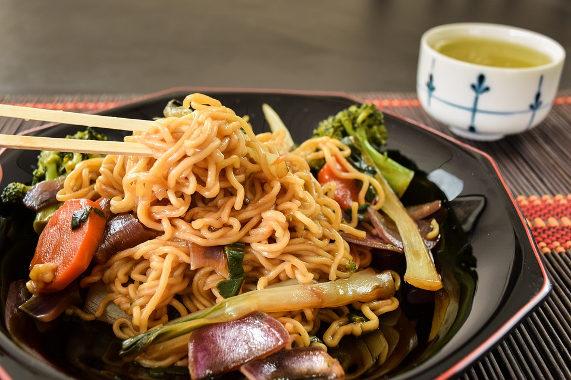

Yakissoba

Yakissoba it is traditional a oriental dishe make with pasta and vegetables.
Ingredients
- 300g of pasta
- A large Onion sliced in pieces
- A spoon of oil olive
- 1/2 brocolis
- 10 spoons of shoyu sauce
- 400g meat sliced in pieces
- 100g of champignon
Step-by-Step
- Bring a large pot of salted water to a boil. Cook spaghetti in the boiling water, stirrring occasionally until tende yet firm to the bite, about 9 minutes. Drain and return to the pot. Let cool, stirring occasionally, about 5 minutes
- Heat olive oil in a large skillet over medium heat; add meat. Cook, turning occasionally, until evenly browned , 5 to 10 minutes
- Add the brocolis and champignon mixed with the meat for 4, 5 minutes and put the pasta cook all together and add the shoyu sauce